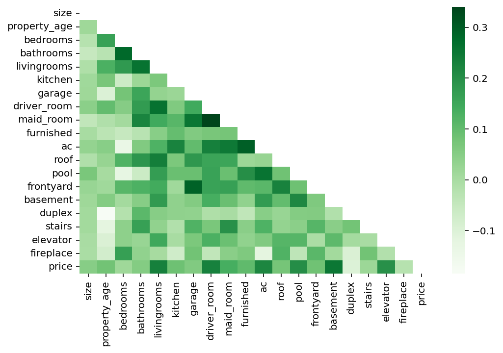
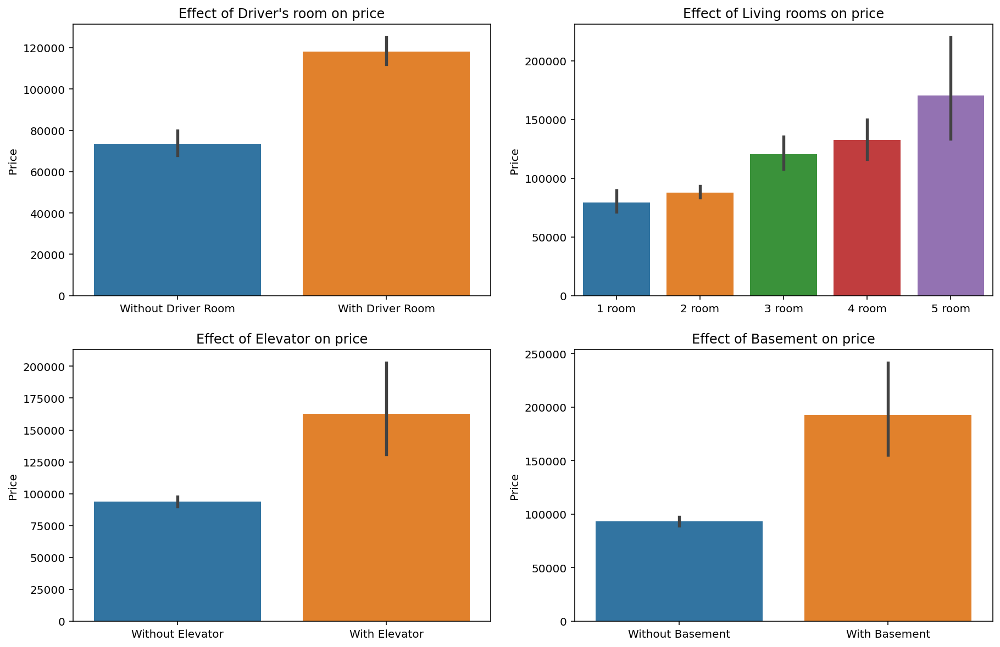
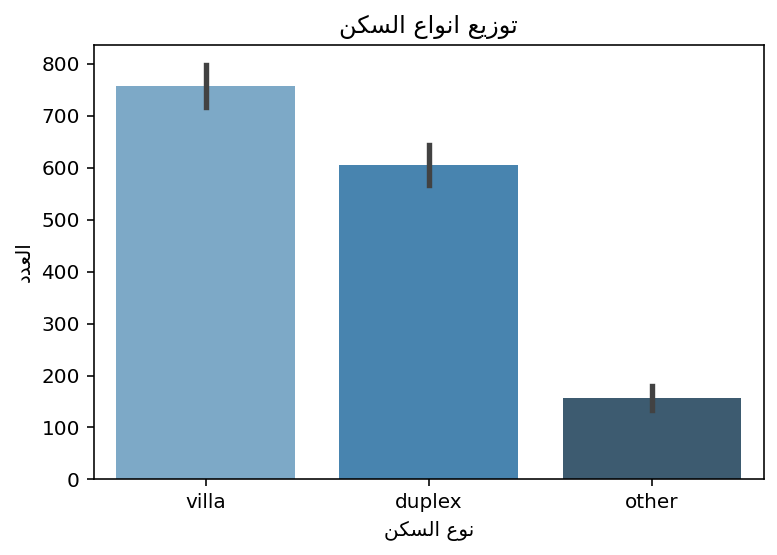

The following questions were in mind during this part of the EDA:
2.2.1 Covariance: What is the factor that when present increases the price the most?
Code
# drop the 2 extreme valuesdata.drop(index=([1206, 1168]), axis=0, inplace=True)corr = data.corr()fig, ax = plt.subplots(figsize=(8,5))sns.heatmap(ax=ax, data= data.corr(), cmap="Greens");

Covariance Heatmap
As we can see in the @corr, we can observe that there are 4 major features that are considered higly correlated with price, these are:
driver_room
pool
ac
basement
Interesting…
How about a deep look at each feature with the price:
Code
# see how great the above 4 feature affect the price# creating the canvasfig, ((ax1,ax2), (ax3,ax4)) = plt.subplots(2,2, figsize=(15,10))# plotting ax1 data: `driver_room`ax1 = sns.barplot(ax=ax1, y=data["price"], x=data["driver_room"] ,data=data)# configure the plotax1.set_title("Effect of Driver's room on price")ax1.set_xlabel("")labels = [item.get_text() for item in ax1.get_xticklabels()]labels[0] ="Without Driver Room"labels[1] ="With Driver Room"ax1.set_xticklabels(labels)ax1.set_ylabel("Price")# plotting ax2 data: `ac`ax2 = sns.barplot(ax=ax2, y=data["price"], x=data["ac"] ,data=data)# configure the plotax2.set_title("Effect of AC on price")ax2.set_xlabel("")labels = [item.get_text() for item in ax2.get_xticklabels()]labels[0] ="Without AC"labels[1] ="With AC"ax2.set_xticklabels(labels)ax2.set_ylabel("Price")# plotting ax3 data: `pool`ax3 = sns.barplot(ax=ax3, y=data["price"], x=data["pool"] ,data=data)# configure the plotax3.set_title("Effect of Pool on price")ax3.set_xlabel("")labels = [item.get_text() for item in ax3.get_xticklabels()]labels[0] ="Without Pool"labels[1] ="With Pool"ax3.set_xticklabels(labels)ax3.set_ylabel("Price")# plotting ax4 data: `basement`ax4 = sns.barplot(ax=ax4,y=data["price"], x=data["basement"] ,data=data)# configure the plotax4.set_title("Effect of Basement on price")ax4.set_xlabel("")labels = [item.get_text() for item in ax4.get_xticklabels()]labels[0] ="Without Basement"labels[1] ="With Basement"ax4.set_xticklabels(labels)ax4.set_ylabel("Price");

Visualizing the effect of the 4 features on the price
We can conculde the following based on the @featureplots:
On average, villas with a basement room tend to be showcased at a higher rent rate.
2.2.2 Which has a higher impact on the rent prices: location or features?
Code
# find the price range in the 4 major cities# create the canvafig, ax = plt.subplots(figsize=(8,5))# plot the datasns.barplot(ax=ax ,y ="price", x=plot_arabic(data["city"]), data=data)# configure the plot ax.set_title(plot_arabic(pd.Series("متوسط أسعار الأجار حسب المدينة")))ax.set_ylabel(plot_arabic(pd.Series("الأسعار")))ax.set_xlabel(plot_arabic(pd.Series("المدن")));
Average price in each of the major cities
2.3 Lana
2.3.1 what frontage appears the most and what is the most desired
Code
plt.figure(figsize=(10,8))plt.hist(x= plot_arabic(data['front']) , bins =20)plt.show()#insert price and frontage corr code

2.3.2 what the ratio of bedrooms and living rooms to bathrooms and does it reflect the market demand
Code
ratio = data[['bedrooms', 'bathrooms']].apply(lambda data: (data['bedrooms']/data['bathrooms']), axis=1)ratio = ratio.mean()ratio
The location of a house may be the most significant factor in determining the price, we don’t have that in the dataset. Perhaps we can create this attribute.
Code
data['district'].head(10)
0 حي العارض
1 حي القادسية
2 حي القادسية
3 حي المعيزلة
4 حي العليا
5 حي الازدهار
6 حي المهدية
7 حي العارض
8 حي الحزم
9 حي العليا
Name: district, dtype: object
Code
# libraries to handel spacial dataimport geopandas as gpdimport geopy
Code
# 0 - create a locator instancelocator = Nominatim(user_agent="myGeocoder")# 1 - conveneint function to delay between geocoding callsgeocode = RateLimiter(locator.geocode, min_delay_seconds=0.1)# 2- - create location columndata['location'] = data['district'].apply(geocode)# 3 - create longitude, laatitude and altitude from location column (returns tuple)data['point'] = data['location'].apply(lambda loc: tuple(loc.point) if loc elseNone)# 4 - split point column into latitude, longitude and altitude columnsdata[['latitude', 'longitude', 'altitude']] = pd.DataFrame(data['point'].tolist(), index=data.index)
We need to process the data to turn it longitude and latitude (and city) into which part of the city a house belongs.
Code
def convert_coord(latitude: pd.Series, longitude: pd.Series, cities: pd.Series):""" given a latitude and longitude and cities, returns a single attribute that encodes which part of the city a (latitude, longitude) pair belongs to (e.g., north_east)""" middles = middle_of_cities(latitude, longitude, cities) part_of_city = assign_location(latitude, longitude, cities, middles)return part_of_citydef middle_of_cities(latitude: pd.Series, longitude: pd.Series, cities: pd.Series):"""returns a dictionary containing four tuples where each tuple is (latitude, longitude) of the middle of one of the cities """#store the produced middle values middles = {}for city in cities.unique(): indicies = cities == city relevent_city = cities.loc[indicies] relevent_latitude = latitude.loc[indicies] relevent_longitude = longitude.loc[indicies]# consider taking the trimmed median instead middle_latitude = relevent_latitude.median() middle_longitude = relevent_longitude.median() middles[city] = (middle_latitude, middle_longitude)return middlesdef assign_location(latitude: pd.Series, longitude: pd.Series, cities: pd.Series, middle_of_cities: dict):""" creates a series of the same length as the original dataframe assigning each instance one of north_east, north_west, south_east, south_west depending on where the latitude and longitude lie relative to the relevent middle of city""" location_4 = []for i inrange(len(latitude)):if latitude[i] isNone: location_4.append(None)continue relevent_city_middle = middle_of_cities[cities[i]]if latitude[i] > relevent_city_middle[0]:# northif longitude[i] > relevent_city_middle[1]:# east location_4.append("شمال شرق")else: location_4.append("شمال غرب")else:# southif longitude[i] > relevent_city_middle[1]:# east location_4.append("جنوب شرق")else: location_4.append("جنوب غرب")return pd.Series(location_4)